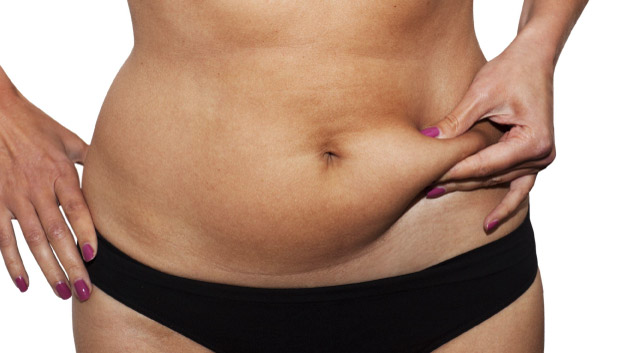

Adiposidad
La adiposidad se da por acumulación de grasa en diversas zonas del cuerpo, pudiendose tratar con aparatología y masoterapia.
La adiposidad se da por acumulación de grasa en diversas zonas del cuerpo, pudiendose tratar con aparatología y masoterapia.
Es una afección frecuente en las mujeres, que provoca la aparición de protuberancias y hoyuelos en la piel.
Las estrías son atrofias cutáneas en forma de líneas sinuosas de color blanquecino o amoratadas localizadas en el tejido conjuntivo.
La flacidez es la pérdida de tensión de los tejidos por la pérdida de colágeno y elastina. Se trata principalmente con aparatología, masoterapia y dermocosmética. Se recomienda también cambios en la dieta e incremento de ejercicio.
Enfermedad de la piel que se caracteriza por la inflamación de las glándulas sebáceas y la aparición de espinillas y granos, en especial en la cara y la espalda.
Es un procedimiento no agresivo ni invasivo, destinado a mejorar el aspecto de la piel, corregir la dilatación de los poros y eliminar las células más superficiales.
Se trata de una exfoliación o descamación de la piel que utiliza sustancias químicas o mecánicas sobre la piel para renovar sus capas y eliminar imperfecciones, con el objetivo rejuvenecer la piel.
La rosácea es una afección común de la piel que causa enrojecimiento y vasos sanguíneos visibles en la cara. También puede producir protuberancias rojas llenas de pus.
Se trata de electrodos de cristal llenos de gas, que tienen por objetivo generar un aumento de calor en la piel, mayor irrigación sanguínea y enriquecimiento del tejido de oxigeno. Tiene efectos desinfectantes, descongestivos, antiinflamatorios y estimulantes de los tejidos.
Es una técnica no invasiva que sirve para combatir la flaccidez, disminuir la celulitis y modelar el contorno corporal. Funciona produciendo contracciones musculares en la zona en la que se aplica, generando así un efecto de entrenamiento muscular.
El Electroporador es un emisor de corrientes que generan ondas electromagnéticas de frecuencias hectometricas moduladas. Se usa como antiaging, líneas de expresión, tratamiento de celulitis, flacidez, adiposidad, entre otras afecciones.
Permite exfoliar las capas más superficiales de la piel, eliminando las células muertas e impurezas y atenuando los pliegues de la piel, como arrugas o cicatrices.
Es una técnica que permite realizar procedimientos para eliminación de grasa, moldeamiento corporal y reducción de celulitis de manera no invasiva, basado en la aplicación de energía laser de manera segura (y sin dolor) a longitudes de onda y potencias muy precisas.
Es un tratamiento utilizado para combatir la flacidez del rostro o del cuerpo, siendo muy eficaz para eliminar arrugas, lineas de expresión e inclusive grasa localizada y también la celulitis, siendo un método seguro con efectos duraderos.

Los ultrasonidos sirven para combatir la celulitis más dura y la grasa o adiposidad localizada, las estrías, cicatrices, el acné y las varices. Además ayuda a mejorar el drenaje linfático, ayudando a eliminar líquidos, como así también la circulación sanguínea.
El objetivo del masaje descontracturante es devolver a nuestros músculos a su estado natural, aliviar la tensión que sentimos en la espalda o en el cuello y deshacer los “nudos”, como comúnmente los llamamos, que las malas artes del estrés o una postura incorrecta han provocado en nuestra musculatura.
El masaje reductor o modelador, es un tipo de masaje que ayuda a moldear distintas partes del cuerpo como el abdomen, gluteos, piernas, caderas, brazos, etc. y reducir tallas, pudiendose realizar manual o con algún tipo de aparato. Permite reducir la grasa que se acumula en ciertas zonas del cuerpo y al mismo tiempo moldea el cuerpo. Éste se realiza con una presión fuerte y una velocidad más rápida que la forma tradicional, con el objetivo de romper la adiposidad localizada en la zona a tratar.
Existen múltiples variantes de masajes relajantes. Aromaterapia, chocolaterapia (con chocolate), quiropráctica, terapia geotermal (con piedras calientes), o masajes con aceites esenciales, son algunos de ellos. Además, los masajes relajantes se suelen acompañar con recursos externos que aumentan la sensación de placer, calma y relax. Por ejemplo se utiliza una luz tenue, velas y aromas que transmita paz y tranquilidad.
La principal ventaja de la depilación definitiva es que permite eliminar tanto el vello que crece y sale con normalidad como el que está enquistado o con foliculitis, ya que el láser actúa en el cabello guiado por el color, aunque este permanezca debajo de la piel.
es un método que disminuye la aparición paulatina del vello, y mejora la textura de la piel con el paso del tiempo. Es más higiénico, menos doloroso y más duradero que otras técnicas.
Lucí tus uñas con nuestros esmaltes de excelente calidad, sin dañarlas. La duración aproximada es de 7 a 10 días. Podés elegir entre un diseño clásico, o animarte a probar nuestros diseños de nail-art.
La pedicura es el tratamiento de las afecciones cutáneas córneas propias de los pies.